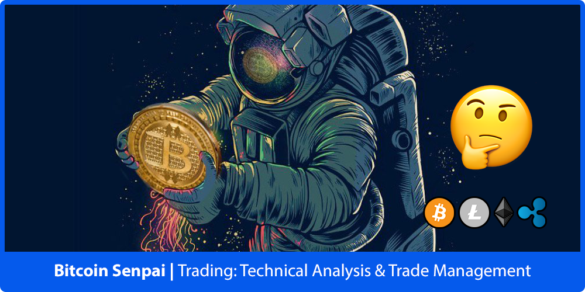

Checkout the website menu for all of the articles that I’ve written about Trading & Investing in Crypto & Financial Markets in general. I’ll be creating & adding more articles to the site over time. To begin with you should try to keep things as simple as possible when creating your charts, you don’t need a bunch of complex and exotic Indicators, Tools & Concepts to generate lucrative Trading Signals. The Indicators, Tools & Concepts listed in the website menu are all that you need to get started with setting up & drawing your charts.
Click here to go tothe top of the page